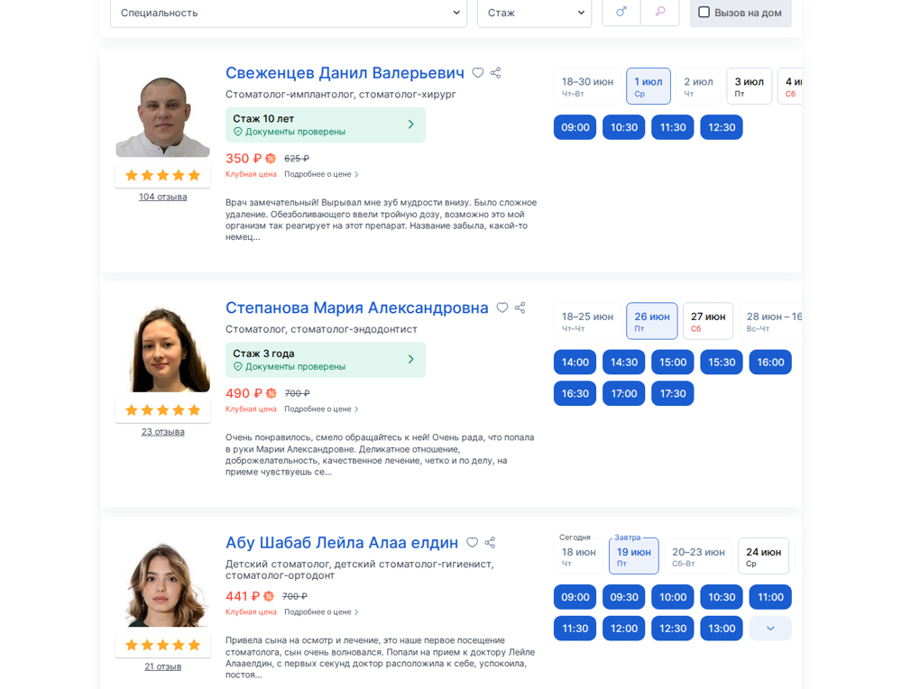
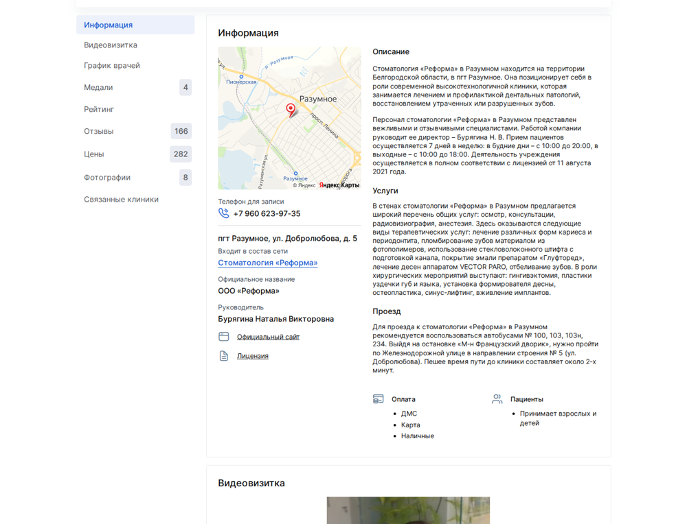
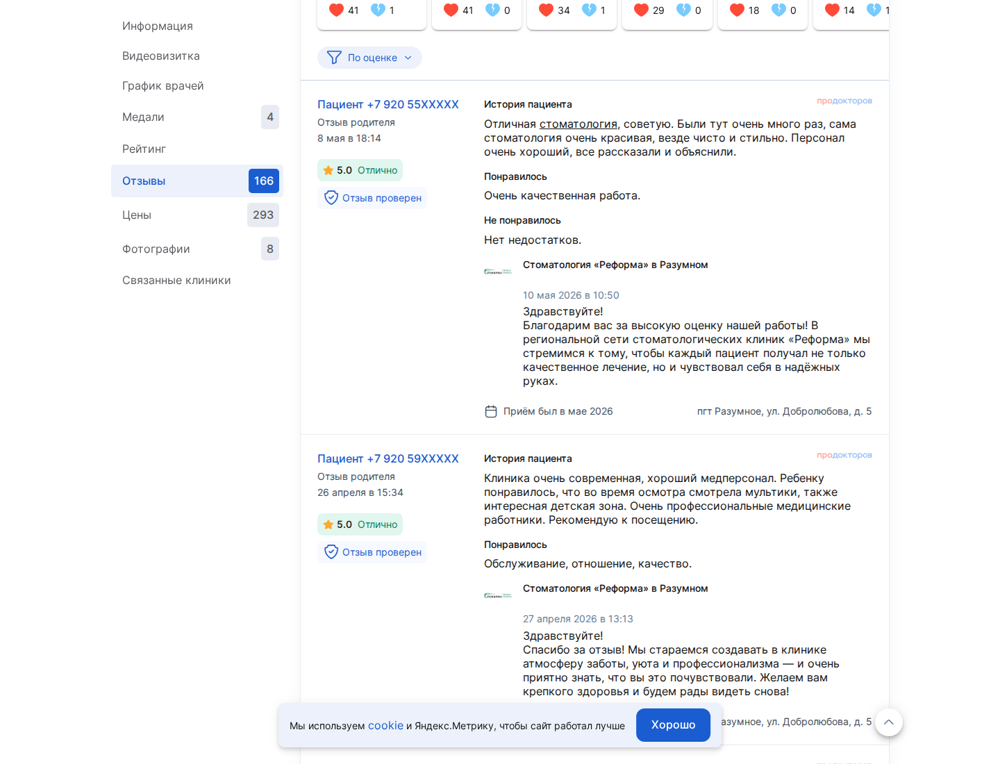
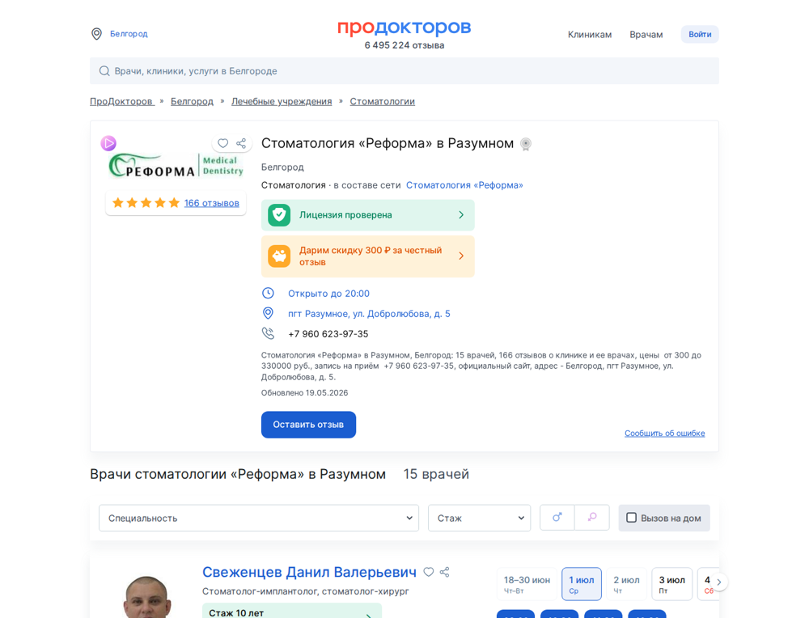
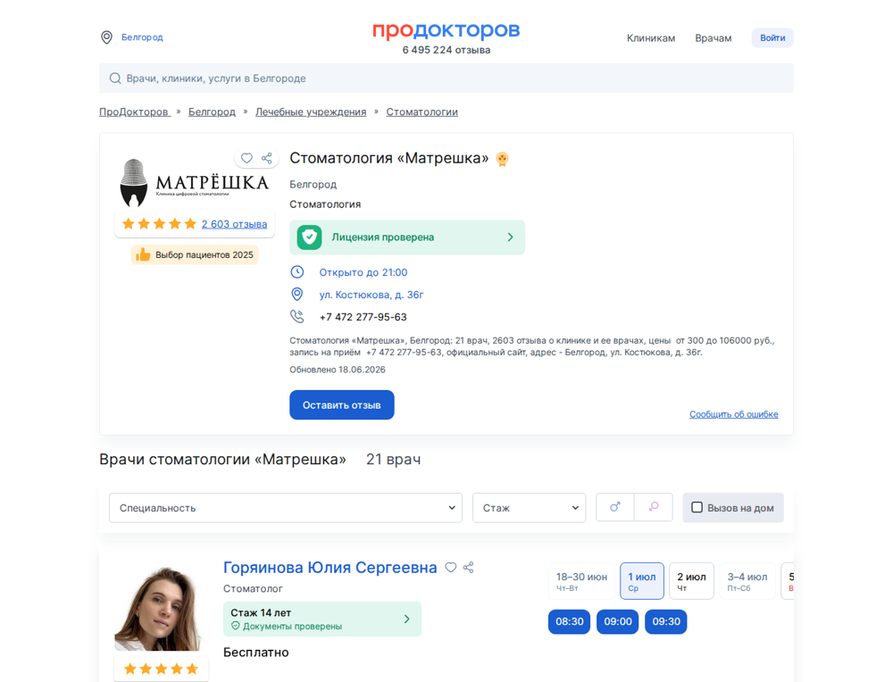
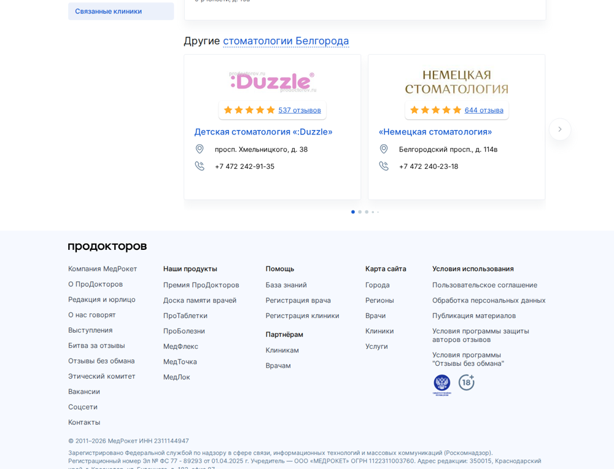
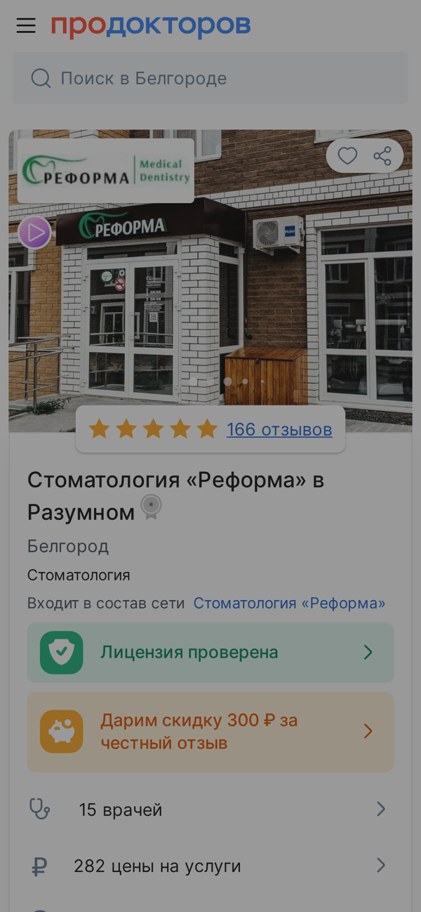
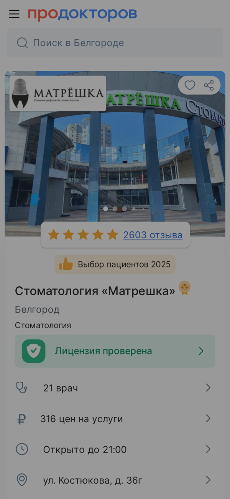

Площадки берут деньги вперёд. Пациент идёт к тем, кто выше в списке. Я открыл вашу карточку так, как её видит человек, который прямо сейчас выбирает куда записаться. Ниже на скринах вашей карточки видно, где утекают записи и кто их забирает. За каждую утёкшую запись вы уже заплатили площадке. Я веду свои клиники на ПроДокторов и прохожу эти грабли сам.
Снимок карточки
Где вы сейчас и куда расти
Вот что видит пациент в вашей карточке. Каждый показатель ниже это не спортивная таблица, а записи, которые вы либо забираете, либо отдаёте соседу по списку. Карточка обновлена площадкой 19 мая 2026.
5
ваш рейтинг · максимум, держите потоком отзывов
166
ваших отзывов · макс по отзывам в радиусе: 2 603
15
ваших врачей · у врачей карточки сравнения: 21
282
цен · цель полный авто-прайс
Балл ранжирования ~274–630 из 730, до 730 не хватает ~100. Последний отзыв 4 июня 2026, 14 дн. назад. Упущено позиций в карточке 4.
Рейтинг по врачам в карточке 5. Вес врачей около половины рейтинга клиники.
Карта баллов ПроДокторов
Что вы добираете из 730, а что упускаете
Позиция в общем списке города складывается из баллов ранжирования до 730. Каждая позиция вниз это пациенты, которые тапнули на клинику выше вас. Они уже искали стоматолога, дошли до списка, но записались не к вам. Самый красный резерв сверху, с него и начинаем.
~274–630/ 730видимый резерв ~100
Параметр
Сейчас
Баллы
До цели
Онлайн-запись на услуги
◐ частично
12–100 / 100
добрать
Онлайн-запись к врачам
◐ частично
12–100 / 100
добрать
Автоматическая выгрузка цен
◐ частично
40–100 / 100
добрать
Успешность записи в клинику за 30 дней
нужен кабинет
— / 100
добрать
Клубная запись (Клуб ПроДокторов)
◐ частично
0–70 / 70
добрать
Доступность записи ≥15 часов в сутки
нужен кабинет
— / 50
добрать
Звёздный рейтинг (звёзды×30)
✓ есть
150 / 150
✓ держать
Запись по телефону
✓ есть
50 / 50
✓ держать
Видеовизитка
✓ есть
10 / 10
✓ держать
Где вы теряете баллы и записи прямо сейчас
Бейдж «Выбор пациентов». нет бейджа (даётся за активность/отзывы/рейтинг)
Акции. акций нет. добавить спецпредложения
Фотографии. мало фото (8). добавить интерьер/команду/работы
Реклама конкурентов убрана. на карточке реклама конкурентов (блок «Другие стоматологии Белгорода» / баннер РЕКЛАМА). нужен тариф Ультима, чтобы убрать
Как выглядит ваша карточка
Врачи, видео и запись: лицо клиники в выдаче
Ваши врачи на карточке (15). Рейтинг и отзывы по каждому врачу дают половину рейтинга клиники и отдельные точки входа пациента. У каждого врача видны слоты онлайн-записи: пациент выбирает время прямо здесь.

Онлайн-запись подключена. Пациент выбирает время прямо в карточке. Чем больше услуг и врачей открыто на запись, тем больше баллов и записей.

Видеовизитка клиники есть. Ролик, где руководитель представляет клинику, даёт балл в рейтинге клиники (730) и теплее знакомит пациента до записи.
Видеовизитки врачей — отдельный рычаг (рейтинг врача, не клиники)
Видеовизитка есть не у всех врачей — это резерв. Точное покрытие видно в карточке каждого врача и в личном кабинете. По методологии ПроДокторов карточки врачей — ядро 2026 (пациент ищет врача): видеовизитка каждому врачу (15–60 сек, вертикальная) даёт +10 к его личному рейтингу (770) и поднимает в списках врачей.
Поток отзывов
Сколько отзывов вы собираете и какой темп держать
Отзывы это главный сигнал доверия и топливо рейтинга. Рейтинг карточки складывается наполовину из отзывов о клинике, наполовину из отзывов о врачах — на графике оба потока по месяцам. Вес отзыва со временем падает, поэтому важен ровный поток.
На графике — последние 24 месяца (о клинике 23, о врачах 52; врачебные — половина рейтинга, но зависят от удержания врачей); медиана ~9/мес (за последние полные месяцы). Последний отзыв 4 июня 2026, 14 дн. назад.
Какой темп держать
Ориентир по вашему штату (15 врач.): минимум 10 отзывов в месяц, и постепенно наращивать (сейчас медиана ~9/мес). Это не рывок и не бюджет, а система: ссылка пациенту сразу после приёма, правильный момент просьбы, работа администратора по скрипту.
Наращивайте плавно. Собирайте только реальные отзывы живых пациентов (через МИС, метка «Отзыв проверен»): модерация строгая, 30–35% отзывов отклоняется, а резкий скачок «с нуля до десятков» площадка и конкуренты видят как аномалию — повод для проверки или жалобы. Заказные/накрученные отзывы — обнуление рейтинга и блок карточки на 3 года, откатить нельзя. Плавный рост реального потока безопасен и так же поднимает рейтинг.

Ваша лента отзывов: наполненность и свежесть, как их видит пациент.
Сравнение с карточкой-ориентиром
Вы и «Стоматология «Матрешка»» лицом к лицу: где разрыв и куда расти
Рейтинг 5 — там, где решает качество, вы уже сильны. Поток отзывов свежий. Объём отзывов — это вопрос темпа, а не потолка: разрыв берётся ровным потоком из месяца в месяц, машиной отзывов, а не бюджетом и не рывком. Это достижимо. Ниже видно, где именно разрыв.

«Стоматология «Реформа» в Разумном», это вы

«Стоматология «Матрешка»», карточка-ориентир
Параметр
Вы
«Стоматология «Матрешка»»
Вывод
Рейтинг
5
5
сильный рейтинг, держите
Отзывы
166
2 603
×15.7 больше отзывов у карточки сравнения
Врачей в карточке
15
21
больше точек входа пациента
Видеовизитка
✅
✗
есть, держите
Клуб ПроДокторов
✅
✗
в Клубе
Медали / награды
✅
✗
есть
Цифры по публичным карточкам ПроДокторов. Отзывы и врачи достоверны, обвязка в листинге может быть неполной. Отбор карточки для сравнения только по: число отзывов · радиус 10 км · число врачей — не оценка качества.
Что у карточки сравнения сильнее
Больше отзывов в 15.7×, плотнее социальное доказательство
Больше врачей в карточке, больше точек входа
Чем закрыть разрыв
нет бейджа (даётся за активность/отзывы/рейтинг)
акций нет. добавить спецпредложения
мало фото (8). добавить интерьер/команду/работы
на карточке реклама конкурентов (блок «Другие стоматологии Белгорода» / баннер РЕКЛАМА). нужен тариф Ультима, чтобы убрать
Пациент в вашем районе сравнивает карточки и идёт туда, где больше свежих отзывов и полнее карточка. Каждый месяц без ровного потока — это записи, которые уходят соседу. Решение — системный сбор отзывов и дозакрытие баллов 730. Бюджет тут не главный рычаг; горизонт берётся процессом — это то, что мы отстраиваем вместе.
Кто рядом с вами
Клиники в радиусе 10 км от вас
Это ваше реальное конкурентное поле: 14 клиник рядом, за тех же пациентов. Отсортированы по числу отзывов, ваша строка выделена.
Клиника
Дистанция
Рейтинг
Отзывы
Врачей
Стоматология «Матрешка»
8.56 км
5
2 603
21
«Европейская Клиника»
8.67 км
4.8
529
30
«Стоматолог и Я» на Белгородском проспекте
9.92 км
5
355
16
Стоматология «Фэмили Смайл»
9.5 км
5
351
18
Стоматология «Дента Арт»
9.01 км
5
313
6
Стоматология «Атмосфера»
8.17 км
5
300
16
Стоматология «ЭвиДент»
7.9 км
5
257
12
Стоматология «Гермес Медикал»
9.58 км
5
244
16
Стоматология «Реформа-Дент» на Юности
9.12 км
5
188
13
Стоматология «Дент Карат»
9.67 км
5
173
11
Стоматология «Реформа» в Разумном (вы)
0 км
5
166
15
Стоматология «Виал Дент»
9.01 км
5
107
5
Стоматология «Денталь Эстетик» на Славы
9.05 км
4.4
57
12
Показаны 12 из 14 соседей по числу отзывов. рейтинг снят со звёздной шкалы списка. У клиник с большим числом отзывов он почти у всех 5,0, поэтому решает не он, а объём свежих отзывов.
Реклама и ставки
На вашей карточке площадка показывает конкурентов
Прямо в вашей карточке крутится блок «Другие стоматологии Белгорода» с соседними клиниками. Пациент, который зашёл к вам, видит ссылки на конкурентов и может уйти к ним. Этот блок убирается только на старшем тарифе.

Блок «Другие стоматологии Белгорода» на вашей карточке: ссылки на соседние клиники.
Кого показывают на вашей карточке (8): Детская стоматология «:Duzzle», «Немецкая стоматология», «Стоматолог 32», Стоматология «Атмосфера», Стоматология «Гермес Медикал», Стоматология «Дент Карат», Стоматология «Матрешка», «Стоматолог и Я» на Белгородском проспекте.
Как устроены ставки
В платных разделах (импланты, виниры, брекеты) первые места это аукцион спецразмещения по второй цене: рекомендуемая ставка растёт от вчерашнего лидера. Для понимания порядка цифр: в крупном городе спецразмещение по стоматологии идёт от 1500 рублей в сутки за позицию. Ставку перебивают каждый день. Конкуренты уже платят, чтобы показываться рядом с вами. Точную ставку по вашим услугам в вашем городе я снимаю из вашего кабинета на этапе работы.
Взгляд с телефона
Как вашу карточку видят со смартфона
Большинство пациентов открывают ПроДокторов с телефона. Это первый экран, по которому решают, записаться или листать дальше.

«Стоматология «Реформа» в Разумном», вы

«Стоматология «Матрешка»», карточка-ориентир
Это срез снаружи
Я взял только то, что видит пациент в вашей карточке. То, что даёт записи, лежит глубже и снаружи его не видно в принципе: ваш точный балл ранжирования, реальная ставка аукциона по вашим услугам, расчёт во что обходится каждая позиция вниз. Снаружи диагноз, в кабинете деньги. Эту часть я собираю с владельцем по договорённости, когда мы работаем вместе.
Часть 2: заполняем кресла пациентами с площадки, за которую вы уже платите
Я веду свои клиники на ПроДокторов и прохожу эти грабли сам, поэтому говорю не из теории. Всё выше это диагноз снаружи. Цифры, которые дают записи, лежат в кабинете и снаружи их не видно: точный балл ранжирования, ваш тариф, реальные ставки аукциона по вашим услугам. Полный разбор я делаю с владельцем по договорённости. Захожу только в настройки карточки, вы показываете экран сами, к базе пациентов и обращениям я не лезу. Снимаем реальную картину, собираем дорожную карту по баллам и отзывам, добираем то, что даёт записи в первую очередь. Работаем на результат. Место в топе зависит и от самой клиники, гарантировать его я не буду. Но дам чёткое ТЗ что дооформить и что делать для выхода в топ. И проведу вас по нему.
Вы уже платите площадке. Сделаем так, чтобы она приводила пациентов, а не крутила конкурентов в вашей же карточке.